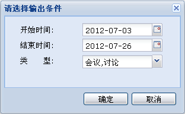

大事记功能主要是记录项目中的大事。包括增删改大事记，查看大事记等操作。
1、添加大事记
在项目列表中选择要添加大事记的项目，然后在大事记列表中通过工具栏或右键菜单的“添加大事记”按钮添加。
注意：大事日期默认选择添加大事记的日期，可以手工修改为大事发生的时间。
2、查看大事记
在大事记列表中选择一个大事记，然后在大事记列表中通过右键菜单“查看大事记”或操作区“查看”查看。
3、修改大事记
在大事记列表中选择一个大事记，然后通过右键菜单“修改大事记”或操作区“修改”修改。
4、删除大事记
在大事记列表中选择一个大事记，然后在大事记列表中通过右键菜单“删除大事记”或操作区“删除”删除。
注意：大事记标题后面的时间是大事发生的时间。
5、输出大事记报告
通过工具栏的“输出大事记报告”按钮查看大事记的报告。可以通过选择过滤条件输出指定时间段，指定类型的大事记报告。大事记输出条件选择如下图所示：

图 大事记选择输出条件